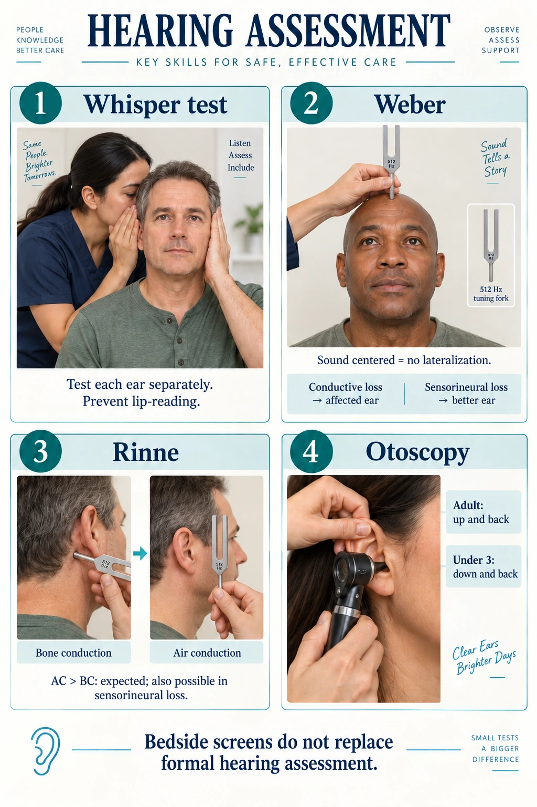
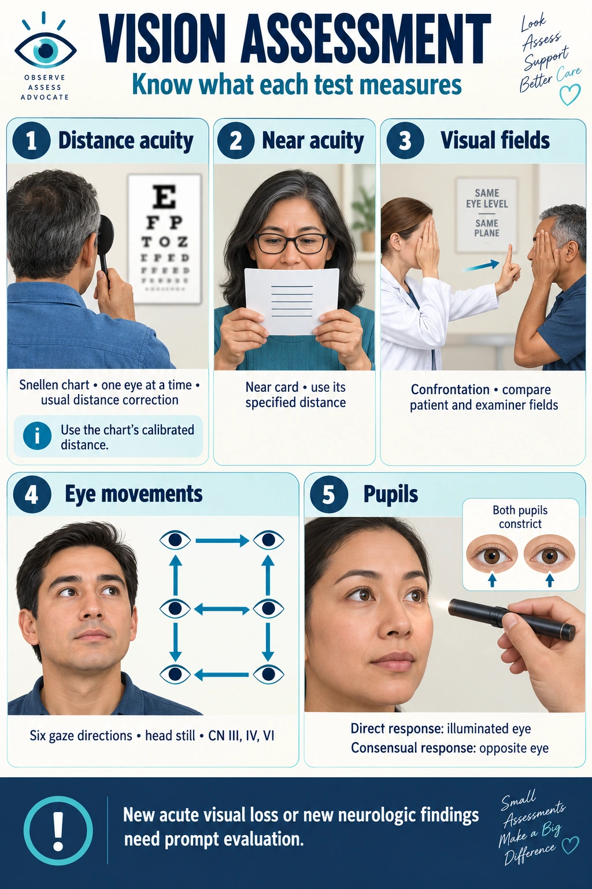
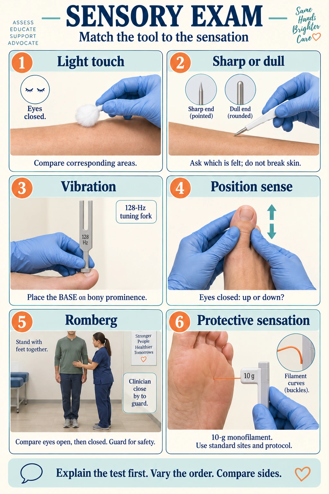
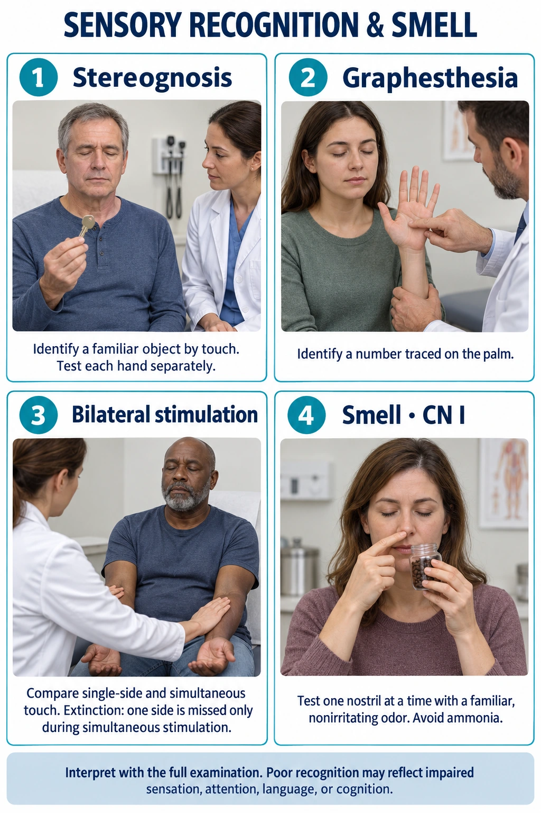

Deprivation vs overload · hearing aids · vision loss · aphasia
Too little input and too much input produce the same picture — confusion, irritability, disorientation. What tells them apart is the environment she is in, and that is what the questions test.
Give her back her glasses and hearing aid. An enormous share of “acute confusion” in an older adult is simply someone who cannot see or hear what is happening. Check for them before anything else.
What each one looks like, how it is done, and what the result means. The pictures are the point — if you can picture the maneuver you can usually reason out the answer.

Sources checked October 3, 2026:
How: Stand 1–2 ft behind her so she cannot read your lips. Press and rub the tragus of the other ear to block it. Breathe all the way out, then whisper three letters and numbers — “6–K–2”. Repeat with a different set for the other ear.
Normal: Repeats at least three of six items correctly.
Abnormal: Cannot repeat them — refer for audiometry. Do not keep raising your voice until she passes.
See Hearing assessment — panel 2
Weber: a midline 512-Hz tuning fork screens for lateralization. Conductive loss tends toward the affected ear; sensorineural loss toward the better ear.
How: Strike a 512 Hz fork on the heel of your hand and stand the base on the middle of her forehead, or the top of her head. Ask where she hears it, not whether.
Normal: Heard equally in both ears. No lateralization.
Abnormal: Lateralizes to the bad ear = conductive loss on that side (wax, fluid, a perforation) — the block keeps room noise out, so bone-conducted sound seems louder. Lateralizes to the good ear = sensorineural loss in the quiet ear.
See Hearing assessment — panel 3
Rinne: compare mastoid bone conduction with air conduction beside the canal. AC greater than BC is expected and can also occur in sensorineural loss.
How: Strike the fork, put the base on the mastoid and ask her to say when it stops. Immediately move the prongs 1–2 cm from the ear canal and ask whether she can still hear it.
Normal: Still hears it in the air after the bone sound has gone — air conduction beats bone conduction, roughly 2 to 1. This is a positive Rinne, and positive is normal.
Abnormal: Bone equal to or better than air = conductive loss. Both shortened but air still better = sensorineural loss.
See Hearing assessment — panel 4
Otoscopy: straighten an adult canal up/back; under age 3 down/back. Brace the examining hand and avoid forceful or deep insertion. Bedside screens do not replace formal audiology.
How: Adult or child over 3: pull the pinna up and back. Child under 3: down and back. Brace your hand against her head so a sudden movement moves the scope with her, and insert 1–1.5 cm angled down and forward.
Normal: Pearly gray, translucent, slightly concave, with the malleus visible and a cone of light at 5 o’clock in the right ear, 7 o’clock in the left.
Abnormal: Red, bulging, landmarks gone = acute otitis media. Dull, retracted, a fluid line or bubbles = otitis media with effusion. Perforation, wax plug or a foreign body will also block conduction.

Sources checked October 3, 2026:
How: Stand her 20 feet from the chart, cover one eye at a time, and leave her glasses or contacts on — this is corrected acuity. Record the smallest line she can read.
Normal: 20/20. Note misses as she goes: 20/40 −2 means she read the 20/40 line but missed two letters.
Abnormal: The bigger the bottom number, the worse the vision: 20/40 means she sees at 20 feet what a normal eye sees at 40. Worse than 20/200 in the better eye, corrected, is legal blindness.
See Vision assessment — panel 2
Near acuity: use the near card’s specified distance and usual reading correction.
How: Hold a Rosenbaum or Jaeger card 14 inches away, one eye at a time, reading glasses on.
Normal: 14/14, or reads the smallest line comfortably.
Abnormal: Has to push the card further away to focus — presbyopia, which starts around 40 and is not a disease.
See Vision assessment — panel 3
Confrontation: compare patient and examiner fields. Cover opposite eyes so the open eyes face each other.
How: Sit about 2 ft away at her eye level. She covers her left eye, you cover your right. Both stare at each other’s nose. Bring a wiggling finger in from each of the four corners, midway between the two of you, and ask her to say the moment she sees it. Then swap eyes.
Normal: She sees the finger at the same moment you do — you are the control, which is why your own fields have to be normal.
Abnormal: A field cut. Losing the same half of the field in both eyes (homonymous hemianopsia) is typical after a stroke.
See Vision assessment — panel 4
Extraocular movements: assess six cardinal gaze directions with the head still; cranial nerves III, IV and VI.
How: Hold your finger about 12 inches away. Ask her to hold her head still and follow it with her eyes only, while you trace a wide H. Watch both eyes together, and pause at each corner.
Normal: Smooth, conjugate movement in all six directions. A couple of beats of nystagmus at the extreme edge is normal.
Abnormal: One eye lagging or not reaching a corner = a palsy of CN III, IV or VI. Sustained nystagmus or double vision is abnormal anywhere.
See Vision assessment — panel 5
Pupil light response: the illuminated pupil constricts directly; the opposite pupil constricts consensually. New acute vision loss or neurologic findings need prompt evaluation.
How: Dim the room and ask her to look at something far away. Bring the penlight in from the side, never straight at her. Watch the lit pupil (direct) and the other one (consensual). Then hold a finger far away and move it toward her nose for accommodation.
Normal: Pupils Equal, Round, Reactive to Light and Accommodation. 2–6 mm, brisk. About one person in five has a small harmless difference in size.
Abnormal: A new unequal pupil, a sluggish one, or a fixed dilated pupil after a head injury means rising pressure in the skull — that is an emergency, not an assessment finding to chart and move on from. Pinpoint pupils suggest opioids.

Sources checked October 3, 2026:
How: Eyes closed. Brush a wisp of cotton on the skin at irregular intervals so she cannot predict the rhythm, and ask her to say “now” each time. Compare left with right, and hands and feet with the trunk.
Normal: Feels every touch, and the two sides feel the same.
Abnormal: Glove-and-stocking loss = peripheral neuropathy. Loss in one band = a nerve root. Loss down one whole side = central, usually a stroke.
See Peripheral sensation — panel 2
Sharp/dull: use appropriate disposable testing equipment; do not puncture skin.
How: Snap a tongue blade in half — one end is now sharp, the other blunt. Eyes closed, alternate them at random and ask “sharp or dull?” each time.
Normal: Identifies both correctly and consistently.
Abnormal: Cannot tell them apart, or feels neither — loss of pain and temperature sensation.
See Peripheral sensation — panel 3
Vibration: place the base of a vibrating 128-Hz tuning fork on a bony prominence.
How: Strike a 128 Hz fork and press the base on a bony point — the joint of the great toe, the medial malleolus, a knuckle. Ask her to say when the buzzing stops. Then damp it with your fingers while it is still on her skin, to check she is not guessing.
Normal: Feels the buzz, and says it has stopped at about the moment it actually does.
Abnormal: Cannot feel it, or loses it well before you do. Vibration is one of the first senses to go in diabetic peripheral neuropathy and in B12 deficiency.
See Peripheral sensation — panel 4
Position sense: hold the sides of a distal digit and move it slightly up or down.
How: Hold the great toe by its sides, not its top and bottom — pressure on the nail bed tells her the answer without any position sense at all. Move it clearly up or down, eyes closed, and ask which way.
Normal: Correct every time, at the toe and at a finger.
Abnormal: Gets it wrong, or needs a big movement to tell. Position sense travels in the posterior columns, the same tract as vibration, so the two are usually lost together.
See Peripheral sensation — panel 5
Romberg: guard against falls; compare stability with eyes open versus closed. Increased instability with eyes closed may reflect impaired proprioception or vestibular function.
How: Feet together, arms at her sides. Eyes open for 20 seconds, then eyes closed for 20 seconds. Stand close with your arms ready — a positive Romberg means she falls.
Normal: Slight sway with the eyes shut, and she stays up.
Abnormal: Positive: she sways badly or falls only once the eyes close. She was using vision to stand up straight, and the proprioception or vestibular input underneath was gone.
See Peripheral sensation — panel 6
Protective sensation: use a 10-g monofilament at recommended sites with the recommended technique, avoiding ulcers/calluses.
How: Eyes closed. Hold the filament perpendicular to the skin and press until it buckles into a C — that bend is what makes it exactly 10 grams. Hold about a second, then lift. Test the sites in no fixed order, and throw in a couple of moments where you touch nothing.
Normal: Feels the filament at every site tested.
Abnormal: Any site not felt = protective sensation lost. She can stand on a tack, or wear a shoe that is rubbing a hole in her foot, and never know.

Sources checked October 3, 2026:
How: Eyes closed. Put a familiar object in her hand — a key, a coin, a paper clip, a button — and let her turn it over.
Normal: Names it within a few seconds.
Abnormal: Astereognosis. Note that this only counts when plain touch is normal: if she cannot feel the object at all, the problem is the nerve, not the parietal lobe.
See Sensory recognition and smell — panel 2
Graphesthesia: identify a number traced on the palm.
How: Eyes closed. With the blunt end of a pen, draw a number 3–6 cm tall on her palm, the right way up from her point of view, and ask her what you wrote.
Normal: Identifies the number.
Abnormal: Agraphesthesia — again, parietal, and again only meaningful if plain touch is intact.
How: Use a caliper, or the two ends of an opened paper clip. Eyes closed. Alternate touching with one point and with two, narrowing the gap until she can no longer tell two from one.
Normal: Fingertip 2–5 mm, palm 8–12 mm, back 40 mm or more. The number varies hugely by body part, so always compare with the same spot on the other side.
Abnormal: A distance much wider than the matching spot on her other side.
See Sensory recognition and smell — panel 3
Bilateral stimulation: compare separate versus simultaneous touch. Extinction is missing one side only during simultaneous stimulation.
How: Eyes closed. Touch both sides at the same instant — both forearms, both cheeks — and ask how many places you touched and where. Check each side alone first, so you know plain touch is intact.
Normal: Reports both touches, on both sides.
Abnormal: Extinction: she feels only one side, even though that same side is felt normally when touched on its own. It is the classic sign of neglect, usually after a right-hemisphere stroke, and it goes with a left-sided field cut.
See Sensory recognition and smell — panel 4
Smell: test one nostril at a time with a familiar nonirritating odor, such as coffee. Avoid ammonia.
How: Eyes closed. Press one nostril shut and hold a familiar, non-irritating smell under the other — coffee, vanilla, soap, orange. Repeat on the other side with a different smell.
Normal: Detects and usually names it on both sides.
Abnormal: Anosmia. Common after a head injury (the olfactory fibers shear as they pass through the skull base), with nasal disease, with age, and as an early sign in Parkinson’s and Alzheimer’s disease.
How: Eyes closed, tongue out. Place a small amount of a test substance on the front two thirds (CN VII, facial), then on the back third (CN IX, glossopharyngeal). Rinse with water between each one.
Normal: Identifies sweet, salty, sour and bitter.
Abnormal: Loss on the front two thirds points at the facial nerve — Bell’s palsy affects taste as well as movement. Taste is also blunted by chemotherapy, radiation, dry mouth and many medications.
Do not label it dementia. Sudden confusion is delirium and delirium has a cause.